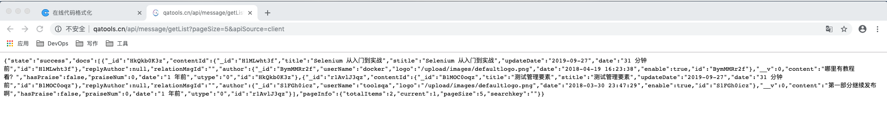
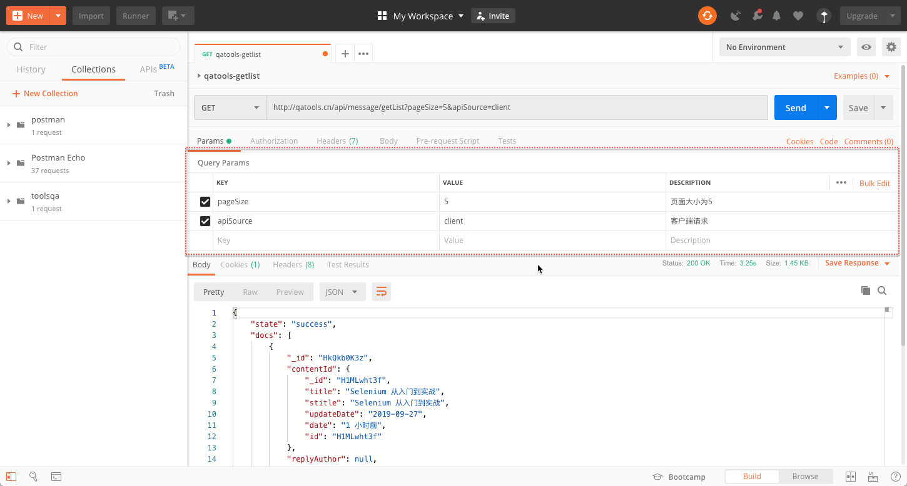
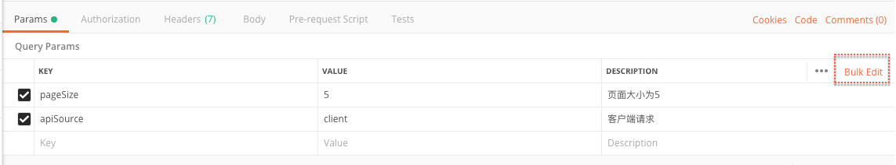
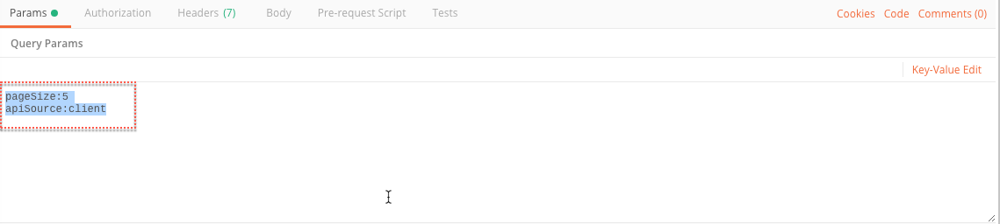
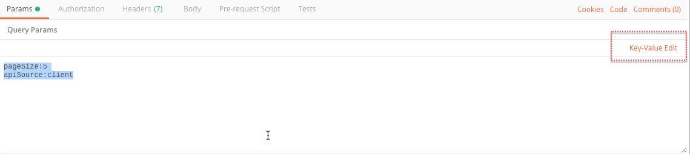

设置请求参数
参数是什么
参数是 URL 的一部分，用了向服务器传递具有特定含义的指令。RESTFul API 向服务器传递参数的 URL 格式如下：
http://qatools.cn/api/message/getList?pageSize=5&apiSource=client
URL 请求中请求参数以” ？“开始，后面跟一个或多个参数。请求参数是一个建值对格式 ”Key = Value“。以上举例中 pageSize=5&apiSource=client 即是请求参数。它们的含义是：
pageSize=5: 返回数据的页面大小为 5 条记录。
apiSource=client: 请求的发起者是客户端
我们把以上请求 URL 填入到浏览器的地址栏中发送会得到以下响应结果：

返回的是 JSON 格式的数据，格式化显示后如下：
{
"state": "success",
"docs": [
{
"_id": "HkQkb0K3z",
"contentId": {
"_id": "H1MLwht3f",
"title": "Selenium 从入门到实战",
"stitle": "Selenium 从入门到实战",
"updateDate": "2019-09-27",
"date": "23 分钟前",
"id": "H1MLwht3f"
},
"replyAuthor": null,
"relationMsgId": "",
"author": {
"_id": "BymMMRr2f",
"userName": "docker",
"logo": "/upload/images/defaultlogo.png",
"date": "2018-04-19 16:23:38",
"enable": true,
"id": "BymMMRr2f"
},
"__v": 0,
"content": "哪里有教程看？",
"hasPraise": false,
"praiseNum": 0,
"date": "1 年前",
"utype": "0",
"id": "HkQkb0K3z"
},
{
"_id": "r1AvlJ3qz",
"contentId": {
"_id": "B1MOC0oqz",
"title": "测试管理要素",
"stitle": "测试管理要素",
"updateDate": "2019-09-27",
"date": "23 分钟前",
"id": "B1MOC0oqz"
},
"replyAuthor": null,
"relationMsgId": "",
"author": {
"_id": "S1FGh0icz",
"userName": "toolsqa",
"logo": "/upload/images/defaultlogo.png",
"date": "2018-03-30 23:47:29",
"enable": true,
"id": "S1FGh0icz"
},
"__v": 0,
"content": "第一部分继续发布啊",
"hasPraise": false,
"praiseNum": 0,
"date": "1 年前",
"utype": "0",
"id": "r1AvlJ3qz"
}
],
"pageInfo": {
"totalItems": 2,
"current": 1,
"pageSize": 5,
"searchkey": ""
}
}
Postman 中设置请求参数
在 Params 标签栏中可以按照键（ Key） -值（ Value） 的方式填入请求参数，请求参数可以是 0 个或者多个，还可以在 描述（Description ）栏对请求参数进行说明。
Postman 自动把 URL 地址栏中 “？”号以后请求参数在 Params 标签栏进行了自动拆分显示，在 Params 标签栏新增、修改、删除的请求参数也会在 URL 地址栏中增加、更新和删除。


快速复制请求参数
- 点击 Params 标签栏右侧的 【Bulk Edit】按钮

- 参数以文本方式显示，多选或全选后可以批量复制。

- 原来的【Bulk Edit】 按钮这时别 【Key-Value Edit】替换，点击【 Key-Value Edit】按钮，Params 标签栏返回 Key-Value 的显示方式。

Postman 参数部分的新增、修改、删除还是很方便的。另外参数对于 URL 也很重要，这使得通过 URL 可以发起复杂的请求。理解并学会使用参数是 API 测试的基础。